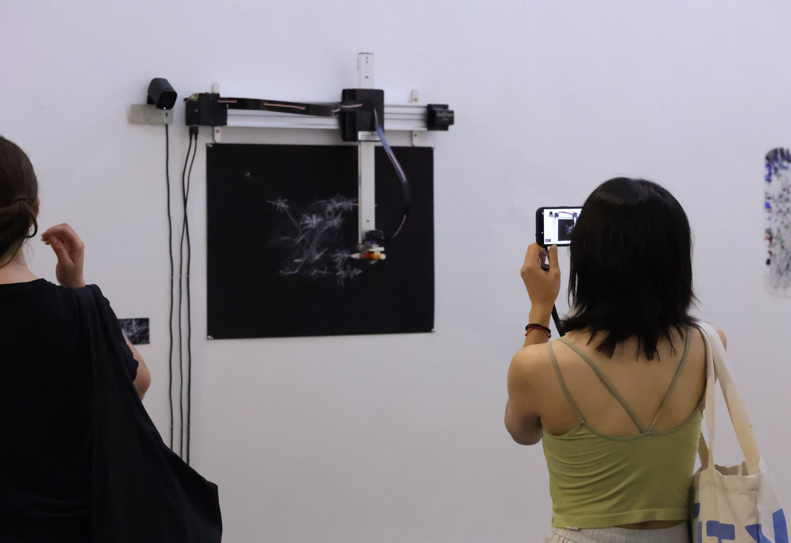
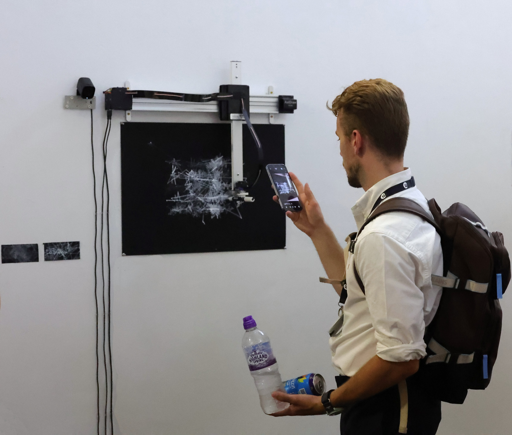
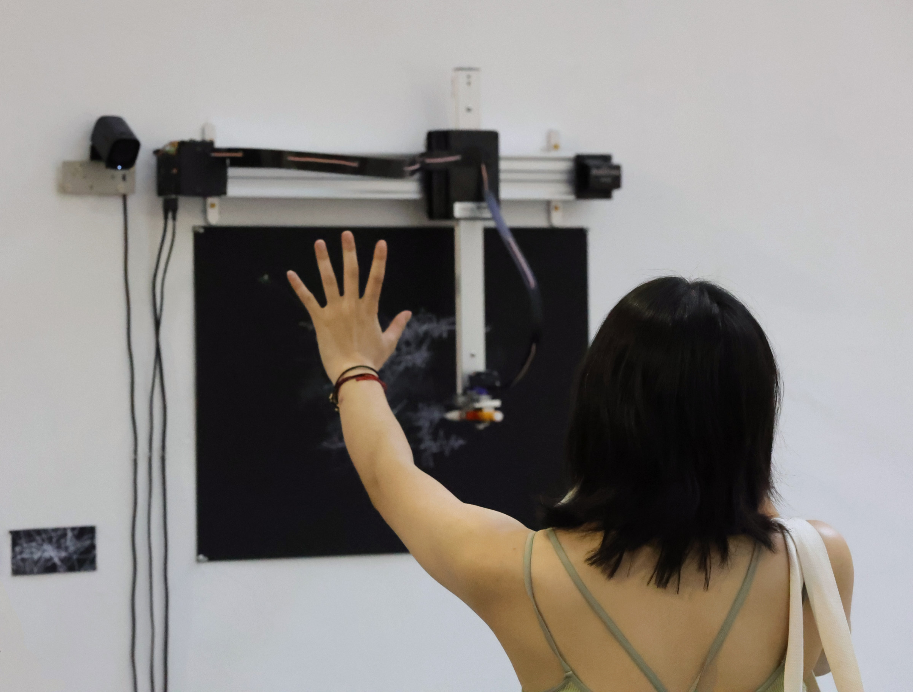
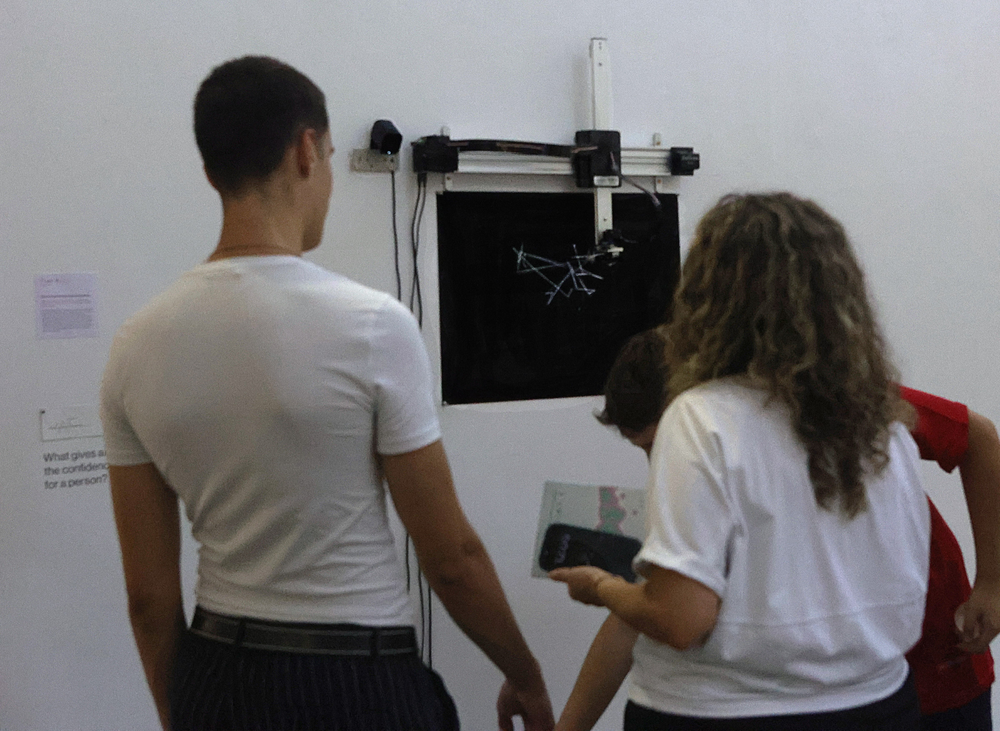
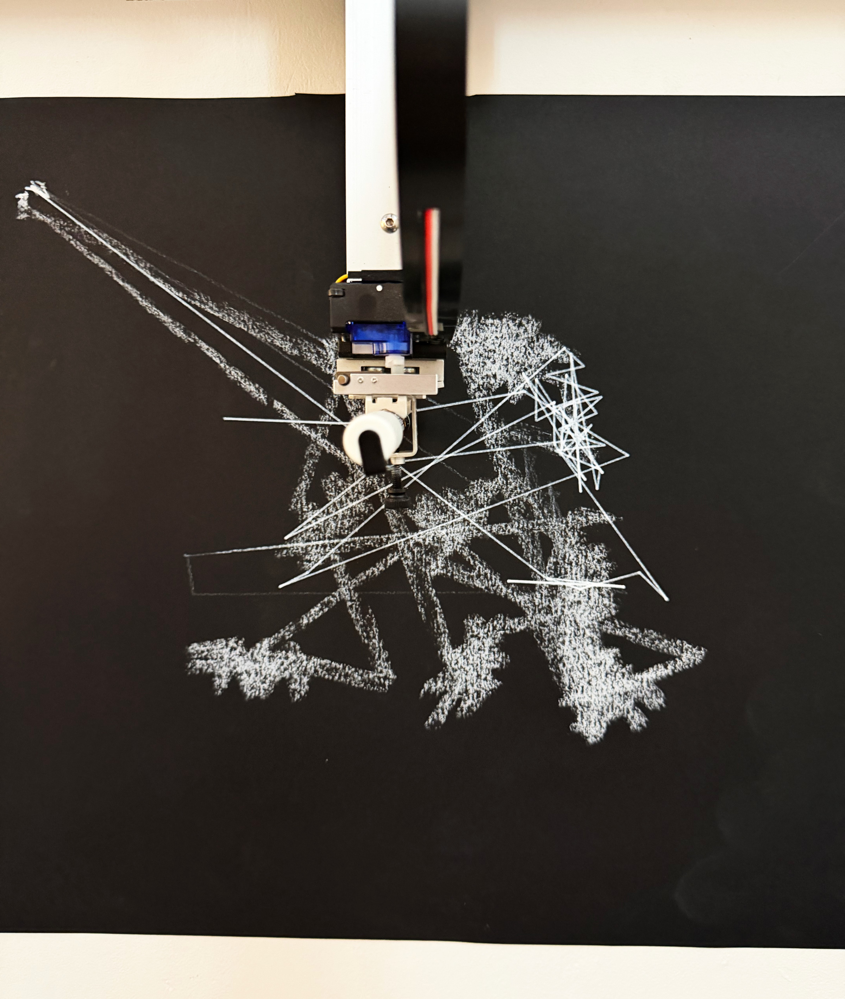
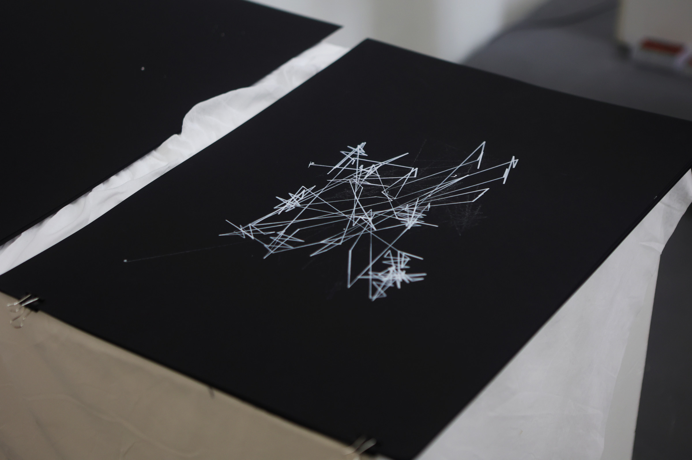

Power
Emerges
Through
Interpretive
Authority

What gives an interpretation the confidence to stand in for a person?
The black A2 paper and the space in front of it worked like a courtroom without a judge.
As someone approached the work, a camera began recording their movement. The system formed a first impression almost immediately, and the AxiDraw translated it into a white mark on the black paper.
If the person stayed, the system kept interpreting. Standing still could become interest. Staying longer could start to look like obsession.




This idea came from the discomfort of being interpreted by other people in my own life. It made me wonder: why are people so confident when they decide what someone else means? And why do those interpretations so easily become something others believe?
Once you control the way someone is described, you gain a certain kind of power over them. But where does that power come from? Experience? Expertise? Authority? These things can make an interpretation look objective and reliable, even when it is still subjective and biased.
“Power and knowledge directly
imply one another.”
— Michel Foucault, Discipline and Punish


AxiDraw V3 · webcam · Python · YOLO · black A2 paper · white pastel and marker